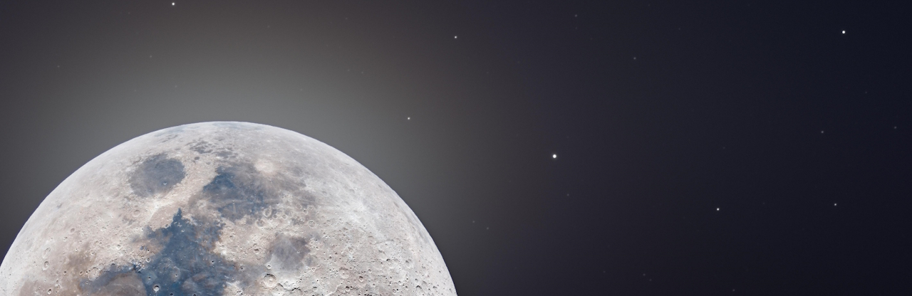

Life outside of the Computer

For the longest time I felt like most of my hobbies were based purely on being on my Computer. Whilst it's great I can find so much to do on it I felt like I was missing out on a key part of life that doesn't exist within the space of a computer monitor and an internet connection.
Motorbikes
I recently got inspired by some online friends to get into motorbikes. After spending time learning and getting the correct qualification, I purchased my first motorbike in February 2026 and have been riding it since. It's a wonderful 2019 Honda CB650R in red and I adore it. The sense of freedom I have on the bike is incredible and I truly feel like I've been experiencing life outside of my computer again. Really putting effort and energy into what I can do on a weekend, the places I can go, the people I can meet. I hope one day to be able to do a long motorcycle tour across multiple countries to see and experience life in different areas.
Gym
Working out at the gym has been another passion of mine. Getting into it properly during the tail end of 2021 and then keeping going with it has been a great improvement to my life and wellbeing. One one hand it's nice to be stronger than I was before but the main benefit for me I feel is the mediative nature of weight lifting. I've struggled with relaxing and resetting my mind in the past yet working out at the gym has been almost like silver bullet for that issue.
Pole Fitness
A hobby I never imagined I would get into when I was younger but now it's one of the highlights of my week. I believe everyone should give pole fitness a try once in their life because of how different and unique it is. From spending all day at my desk to then spending an evening holding poses, flipping upside down, and spinning all the while whilst trying to hold a smile and elegant shapes with your arms, legs and feet. There is nothing quite like it.